A brief tour of inheritance, genotyping, sequencing, etc.
Outline
Genetic material, inheritance and identity by descent
What we can observe: alleles and identity in state
Alleles in populations
Theory of inferring kinship*
Genotyping technologies and genomic sequencing
Overview of some special, relevant topics:
mtDNA, maternal inheritance
Genetically inferred sex
Epigenetic ageing
*We will address more practical issues in a separate session.
Organization of genetic material
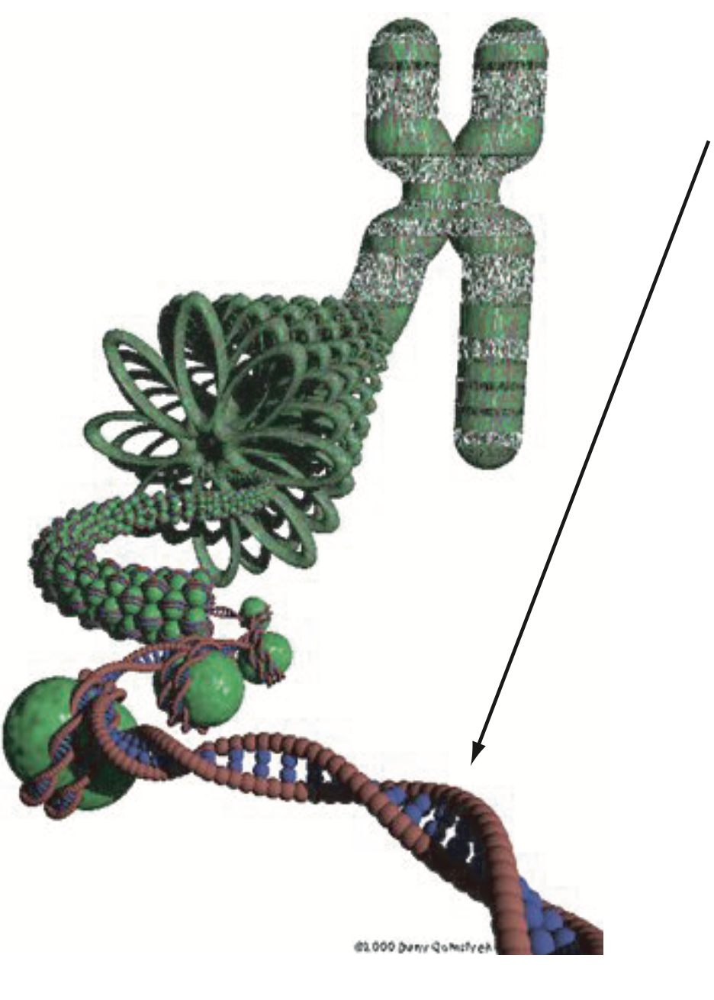
…AGGATCGTGCATGGCTAGCTGATTCCGTATCCGTTC…
Genetic material consists of long molecules of DNA organized into chromosomes.
A sequence of A, C, G, or T bases.
Most organisms we will be concerned with are diploids: chromosomes come in pairs, one from mom and the other from dad.
To reproduce, diploids form haploid gametes, eggs and sperm, which unite to create a new diploid.
The use of genetics for kin-finding flows entirely from this.
Chromosomes come in pairs
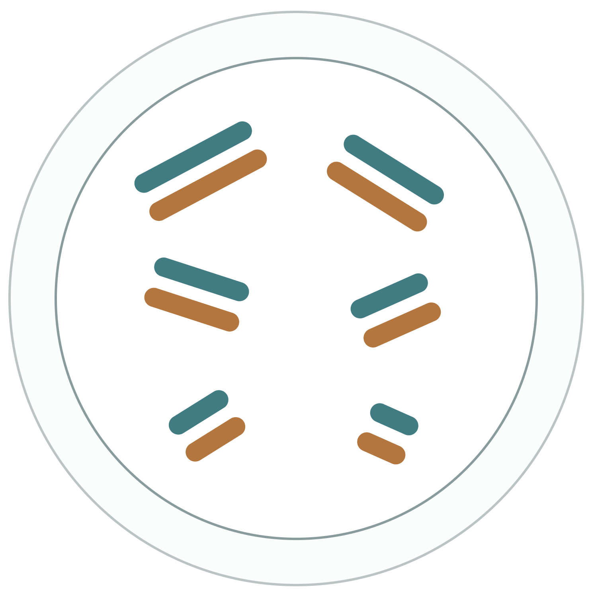
One from each parent:
Mom supplies the maternal chromosome, which came from the egg.
Dad supplies the paternal chromosome, which came from the sperm.
Meiosis and recombination
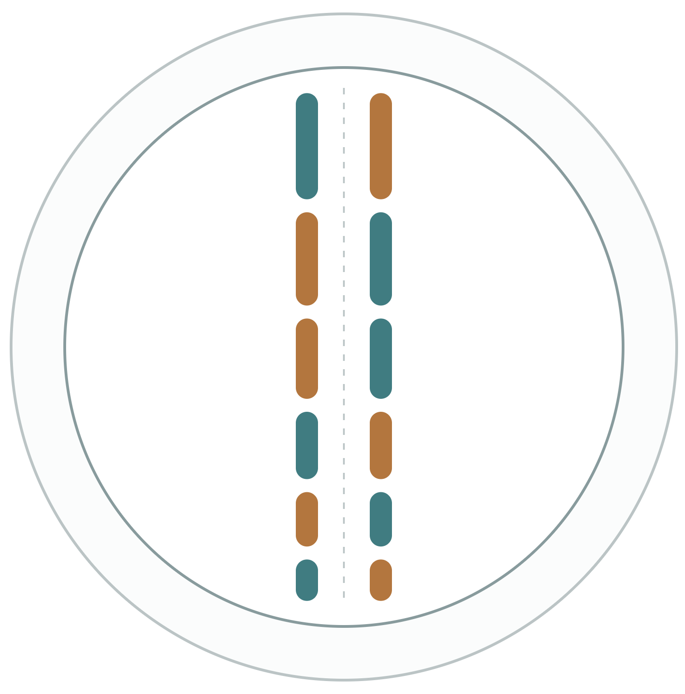
During meiosis, homologous chromosomes assemble together before being pulled into the gametes.
Before they separate, chromosome arms cross over and may exchange segments between the chromosomes.
What ends up in the gamete
There is quite a bit of complexity in these bundles of chromatids.
For our purposes, it is best to think about the consequences for what ends up in the gamete.
DNA is inherited in chunks
Diploid germ cell
→
Haploid gamete
At any point on an autosome, a gamete gets a copy of maternal or paternal DNA, each with probability \tfrac12.
Independently for each chromosome.
Maternal versus paternal origin of sites on the same chromosome is not independent.
Identity by descent
Diploid germ cell
→
Haploid gamete
When that gamete unites with another, the offspring carries DNA that is an effectively identical copy of half the DNA in its mother and half in its father.
Such DNA is identical by descent, or IBD.
Parent to offspring
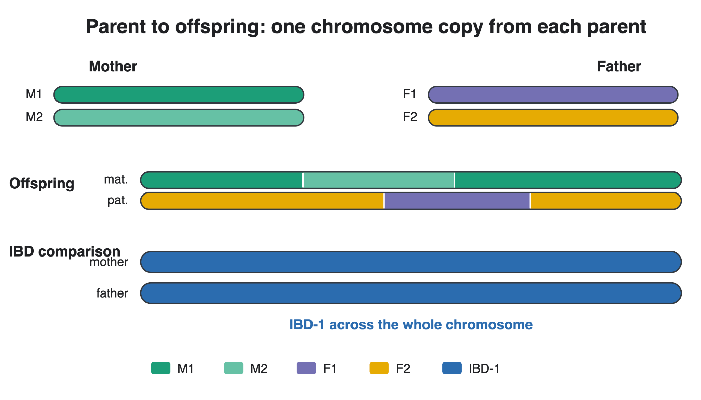
Parent–offspring IBD
A non-inbred parent and its non-inbred offspring share exactly one gene copy IBD everywhere in the genome.
Blue denotes IBD-1: sharing one gene copy IBD.
Half-sibling IBD
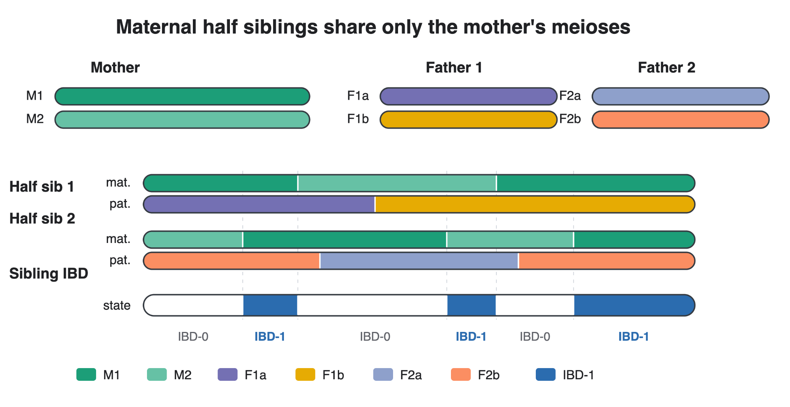
Half siblings can share some of their genome IBD-1 and the rest IBD-0 (not IBD).
How much on average? We will calculate that shortly.
Full-sibling IBD
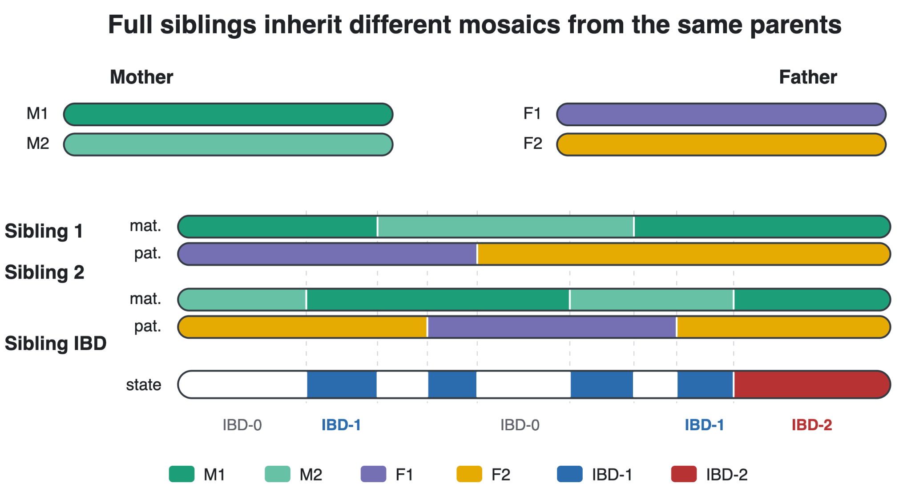
Full-sibling pairs can share IBD-0, IBD-1, or IBD-2 in their genomes.
Cotterman coefficients
Let \kappa_0, \kappa_1, and \kappa_2 denote the expected fractions of the genome in states IBD-0, IBD-1, and IBD-2, given a relationship.
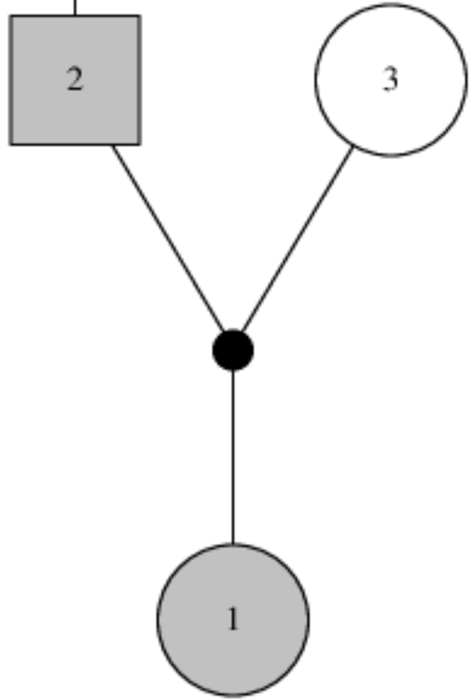
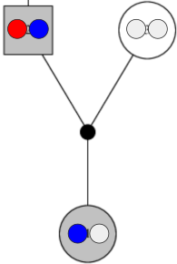
Two possibilities, each with probability \tfrac12:
The offspring inherits Dad’s blue gene copy.
The offspring inherits Dad’s red gene copy.
In both cases, Dad and the offspring share one gene copy IBD.
For parent–offspring:
\boldsymbol{\kappa}=(0,1,0).
Cotterman coefficients for half siblings
Maternal half siblings
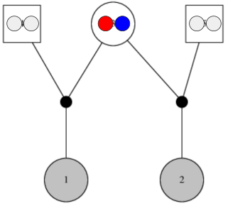
Individual 1 gets red with probability \tfrac12, and individual 2 independently gets red with probability \tfrac12:
\tfrac12\times\tfrac12=\tfrac14.
Or, both inherit blue, also with probability \tfrac14.
So:
\boldsymbol{\kappa}=(\tfrac12,\tfrac12,0).
Enumerating the half-sibling cases
Or, even simpler, enumerate the four equiprobable cases.
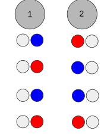
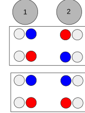
\kappa_0=\frac24=\frac12
\kappa_1=\frac24=\frac12
Full siblings: two independent half-sibling processes
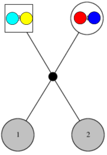
Individuals 1 and 2 share, from Dad:
Zero gene copies IBD with probability \tfrac12.
One gene copy IBD with probability \tfrac12.
Independently, the same possibilities apply to the copies from Mom.
The total number of gene copies shared is the sum of two independent Bernoulli random variables:
\boldsymbol{\kappa}=(\tfrac14,\tfrac12,\tfrac14).
Full siblings can share two copies IBD even when neither individual is inbred.
Half-thiatic pairs
Half-aunt–niece, half-avuncular, etc.
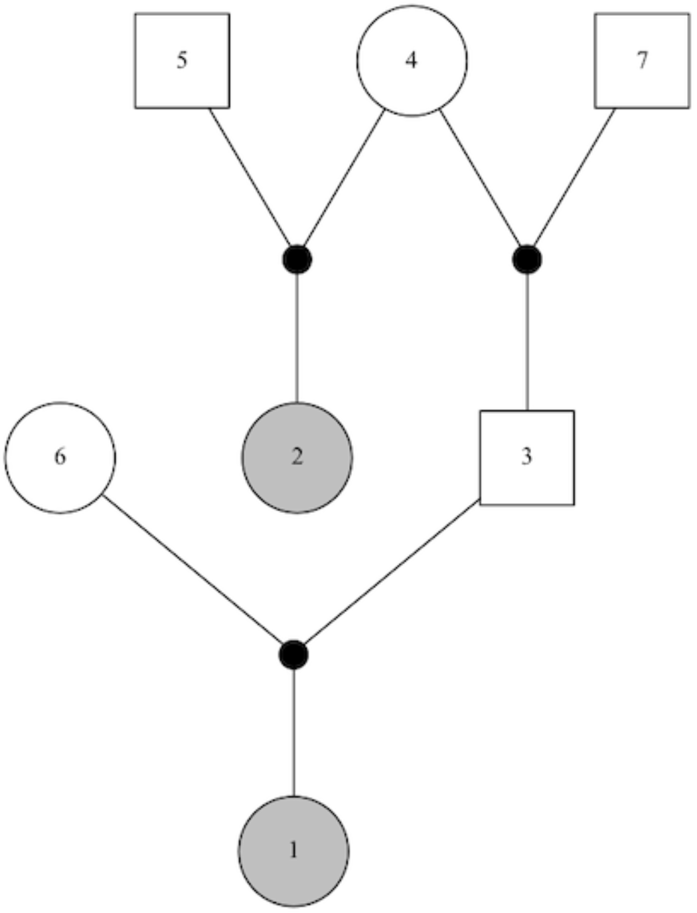
Individuals 1 and 2 share a gene copy IBD only if:
Individuals 2 and 3 share a gene copy IBD, and
That shared copy is transmitted from 3 to 1.
Individuals 2 and 3 are half siblings, so they share one copy IBD with probability \tfrac12.
Individual 3 transmits that particular copy to 1 with probability \tfrac12.
\boldsymbol{\kappa}=(\tfrac34,\tfrac14,0).
Cotterman coefficients across relationships
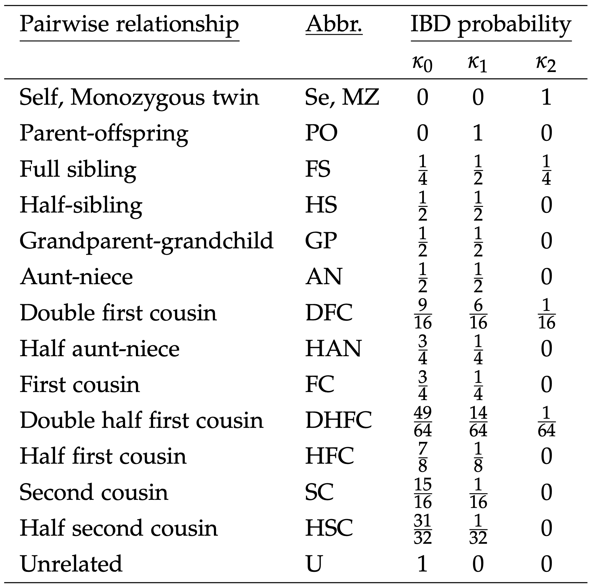
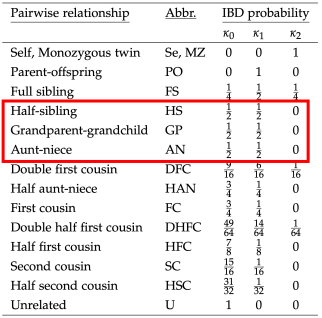
As the shared ancestor gets further back in generations, the expected fraction of shared genome decreases by a factor of \tfrac12 for each meiosis.
Note the three relationships with the same expected fraction of IBD:
Half-sibling
Full-thiatic (aunt/uncle–niece/nephew)
Grandparent–grandchild
Take-home message about IBD
If we could see IBD and measure its proportion across the genome, it would tell us something about a pair’s relationship: the Cotterman coefficients give the expected fractions in each IBD state.
We do not observe IBD directly. We have to use what we can observe.
We can observe places in the genome where individuals carry different genetic sequences.
It is easiest to think of these as sequence variants, although a variant can be any difference in the genome.
Single-nucleotide polymorphisms
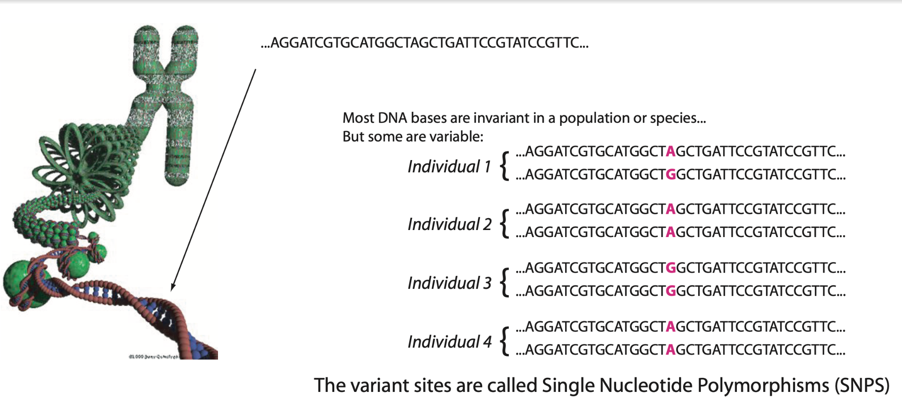
The different possible forms at a variant are called alleles.
At a SNP, the possible alleles are A, C, G, or T.
Genotypes
In a diploid, the genotype is the unordered combination of alleles at a variant.
At a nucleotide position, possible alleles are A, C, G, or T. Most SNPs have only two observed alleles, for example A and G.
Other types of genetic markers may have more alleles.
List the possible alleles as a_1,a_2,\ldots. The genotype G_i of diploid individual i combines the allelic types of its two gene copies:
In large, randomly mating populations, this is a reliable model. If observed genotypes do not follow these Hardy–Weinberg proportions, investigate why.
Genotypes at different variants
The overwhelmingly simple model, part 2
The typical assumption is that the allelic types carried by an individual at one variant are independent of those carried by that individual at another variant.
Each variant gets alleles drawn independently from its own bucket.
This is also typically reliable in large, randomly mating populations, and it can be checked.
When genotype frequencies across loci do not suggest independence, the loci are in linkage disequilibrium (LD).
LD might indicate population structure, inversions, markers close together in the genome, etc.
These assumptions give simple predictions that can be checked for violations.
Allelic types and identity by descent
How can genotypes be used to infer IBD, and hence relationships?
If individuals 1 and 2 share a gene copy IBD, the allelic type of that copy is the same in both individuals.
Related individuals’ genotypes are therefore not independent.
Their joint genotype probability is not simply the product of their genotype probabilities.
Joint genotype probability of a pair
At one locus, let G_1 and G_2 be the two genotypes and let \boldsymbol{\kappa}=(\kappa_0,\kappa_1,\kappa_2) describe the relationship. Assume neither individual is inbred and condition on population allele frequencies.
Rows give G_1, columns give G_2, and i,j,k,\ell denote distinct allelic types.
The main point: it is straightforward to calculate
P(G_1,G_2\mid\boldsymbol{\kappa}).
Weighing evidence between relationships
P(G_1,G_2\mid\boldsymbol{\kappa}) is the joint probability of two genotypes at one locus, given their relationship. It is also the likelihood of \boldsymbol{\kappa} given the genotypes.
When both relationships are among unrelated, parent–offspring, and self/clone, and markers are not in LD, this is a proper log-likelihood ratio under the model.
For the other relationship comparisons considered here, physical linkage generally means it is not a proper log-likelihood ratio.
We can call it pseudo log-odds, or a PLOD. It is still very useful.
Why is it not a proper log-likelihood ratio?
Summing per-variant log-likelihoods treats the pair’s genotype observations as independent across variants.
Physical linkage makes that assumption fail. But all is not lost.
Properties of \Lambda_{R_1/R_2}
\Lambda_{R_1/R_2} is a sum of L random variables. For large L, under suitable conditions, it has an approximately normal distribution.
Its expected value is unaffected by correlation due to physical linkage: